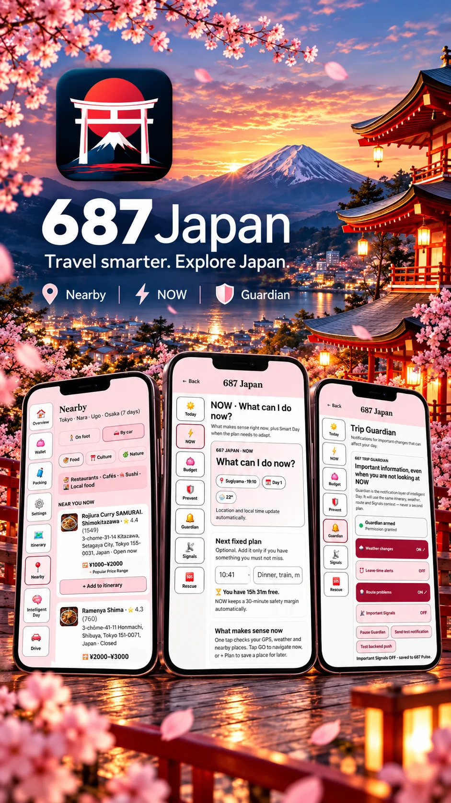

ITALIA
687 Italy
Pianifica e viaggia in Italia con Intelligent Day, NOW, Nearby, Budget, Prevent, Guardian, Signals, Rescue, traduzione e navigazione in un'unica app dedicata.
Treni, aeroporti, regole per guidare, cibo, lingua e sicurezza: risposte chiare alle domande che i viaggiatori fanno davvero, verificate su fonti ufficiali.
 GIAPPONE · ITINERARINUOVATokyo, Kyoto e Osaka in 7 giorniLa Golden Route giorno per giorno, tempi dello Shinkansen e il conto del JR Pass.Leggi la guida →
GIAPPONE · ITINERARINUOVATokyo, Kyoto e Osaka in 7 giorniLa Golden Route giorno per giorno, tempi dello Shinkansen e il conto del JR Pass.Leggi la guida → GIAPPONE · TRENINUOVAIl JR Pass conviene nel 2026?Nuovi prezzi 2026, il conto rapido e le alternative più economiche.Leggi la guida →
GIAPPONE · TRENINUOVAIl JR Pass conviene nel 2026?Nuovi prezzi 2026, il conto rapido e le alternative più economiche.Leggi la guida → GIAPPONE · AEROPORTINUOVADa Narita e Haneda a TokyoSkyliner, Narita Express, bus e treni da Haneda: prezzi e tempi.Leggi la guida →ITALIA · TRENINUOVACinque Terre in trenoPrezzi 2026 della Cinque Terre Card, biglietti singoli, sentieri e consigli.Leggi la guida →ITALIA · AEROPORTIDa Fiumicino al centro di RomaLeonardo Express, FL1, taxi a tariffa fissa di 55 € e bus: quale prendere.Leggi la guida →
GIAPPONE · AEROPORTINUOVADa Narita e Haneda a TokyoSkyliner, Narita Express, bus e treni da Haneda: prezzi e tempi.Leggi la guida →ITALIA · TRENINUOVACinque Terre in trenoPrezzi 2026 della Cinque Terre Card, biglietti singoli, sentieri e consigli.Leggi la guida →ITALIA · AEROPORTIDa Fiumicino al centro di RomaLeonardo Express, FL1, taxi a tariffa fissa di 55 € e bus: quale prendere.Leggi la guida → GIAPPONE · TRASPORTISuica e PASMO: le carte IC per turistiWelcome Suica o carta normale, Suica su iPhone, dove funziona e come ricaricarla.Leggi la guida →ITALIA · IN AUTOZTL in Italia: come evitare le multe in autoCos'è una ZTL, come leggere i varchi, come arrivano le multe alle auto a noleggio e come raggiungere l'hotel senza rischi.Leggi la guida →
GIAPPONE · TRASPORTISuica e PASMO: le carte IC per turistiWelcome Suica o carta normale, Suica su iPhone, dove funziona e come ricaricarla.Leggi la guida →ITALIA · IN AUTOZTL in Italia: come evitare le multe in autoCos'è una ZTL, come leggere i varchi, come arrivano le multe alle auto a noleggio e come raggiungere l'hotel senza rischi.Leggi la guida →Ogni app 687 usa lo stesso sistema di viaggio e lo adatta al paese.
Pianifica e viaggia in Italia con Intelligent Day, NOW, Nearby, Budget, Prevent, Guardian, Signals, Rescue, traduzione e navigazione in un'unica app dedicata.

Il sistema 687 adattato al Giappone: strumenti per la giornata, avvisi Guardian con allerta terremoti, pianificazione Shinkansen e voli interni, Nearby su Apple Maps, aiuto per il menu in inglese, traduzione di conversazioni nelle due lingue e app in 8 lingue.
I treni veloci (Frecce e Italo) costano meno se prenotati prima e nei periodi di punta possono esaurirsi. I regionali hanno prezzo fisso e si comprano anche il giorno stesso. Leggi la guida Trenitalia o Italo.
Sì. Carte IC come Suica e PASMO funzionano su quasi tutti i treni, metro e bus e in molti negozi. Leggi la guida Suica e PASMO.
Una zona a traffico limitato nei centri storici. Se entri senza permesso, la telecamera ti multa, spesso mesi dopo tramite il noleggio. Leggi la guida sulle ZTL.
687 è una famiglia di app, una per paese. Il sistema di base resta lo stesso, mentre informazioni e strumenti locali si adattano a ogni destinazione.
È il livello giornaliero che collega Oggi, NOW, Budget, Prevent, Guardian, Signals e Rescue, così capisci la giornata e la adatti senza ripartire da zero.
Guardian tiene in vista informazioni e cambiamenti importanti mentre ti sposti, così non devi controllare di continuo tanti servizi scollegati.
No. 687 ti aiuta a decidere dove andare e poi si appoggia ai navigatori supportati per il percorso.
Apri la pagina della destinazione che ti interessa: ogni pagina prodotto ha i link ufficiali ad App Store e Google Play.
687 è una famiglia di app di viaggio dedicate a un singolo paese. Ogni edizione unisce pianificazione, strumenti per la giornata e informazioni sulla destinazione in un sistema familiare.
687 ti aiuta a organizzare trasporti e alloggi: voli internazionali, collegamenti interni, treni, hotel e trasferimenti, tutti collegati all'itinerario.
Sì. 687 è pensato per viaggi in più città, con tappe, alloggi, trasferimenti, prenotazioni e obiettivi collegati in un unico percorso.
Sì. Prenotazioni a orario, tour, impegni fissi e obiettivi importanti restano in vista mentre costruisci e adatti l'itinerario.
687 può includere i giorni con l'auto a noleggio e le tappe in macchina, e collegare il piano ai navigatori supportati quando è ora di guidare.
Sì. Il piano resta utile durante il viaggio, mentre Intelligent Day, NOW, Nearby, Prevent, Guardian, Budget, traduzione e navigazione ti aiutano nelle decisioni di ogni giorno.